Learn Polish. Keep it to yourself.
PolyFox Polish takes you from your first word to level C2 in short daily lessons. Every word and sentence is spoken, your own speaking is checked on the phone, and old words keep returning until they stay.
It is free, with no adverts and no account, and it cannot go online. Everything is in the app from the moment you install it.
Download for AndroidHow to install
- Version 1.0.0
- Android 8 or later
- 334 MB
Free, with nothing to unlock. No adverts, no account, no tracking. Read the release notes.
Chrome may say the file might be harmful. It shows this for app files that do not come from Google Play. Choose Download anyway.
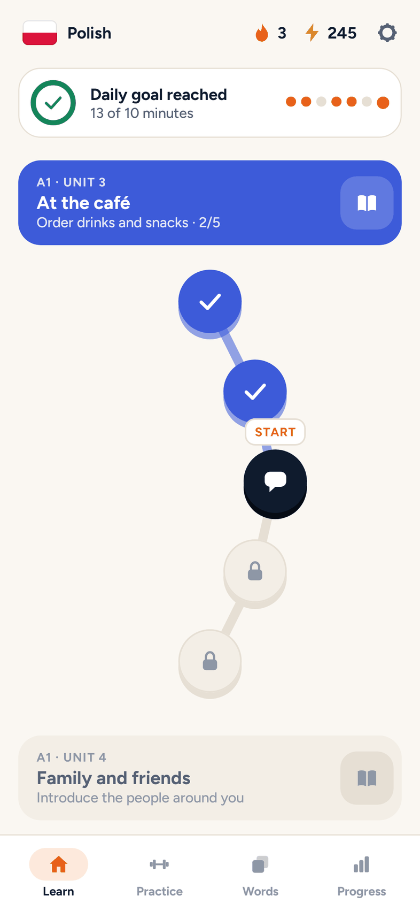
- No subscriptionEvery lesson is in the free app.
- No advertsNone in the app and none on this site.
- No internetThe app has no permission to go online.
- No accountYour progress stays on your phone.
A look inside
These are the real screens, drawn from the app's own code with a made-up learner. Swipe or scroll sideways to see them all.
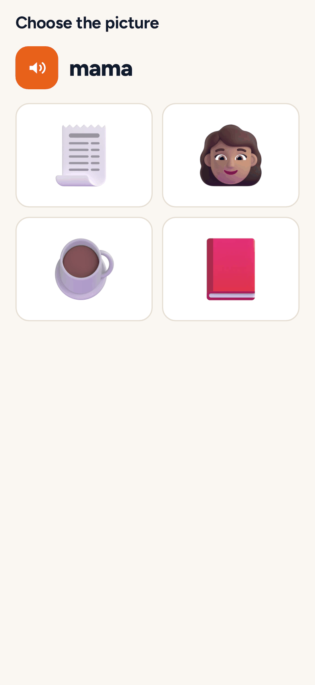
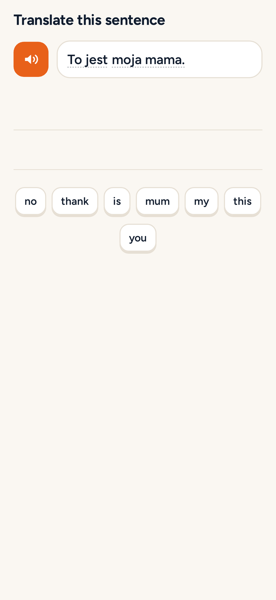
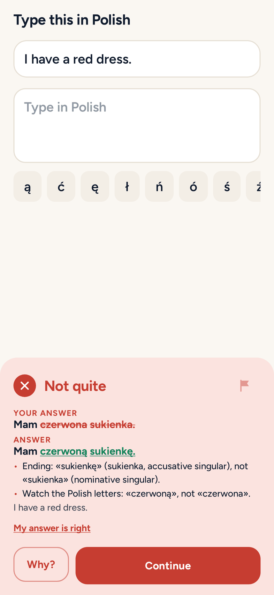
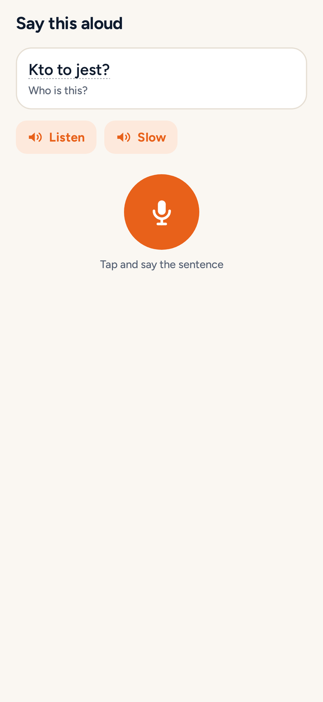
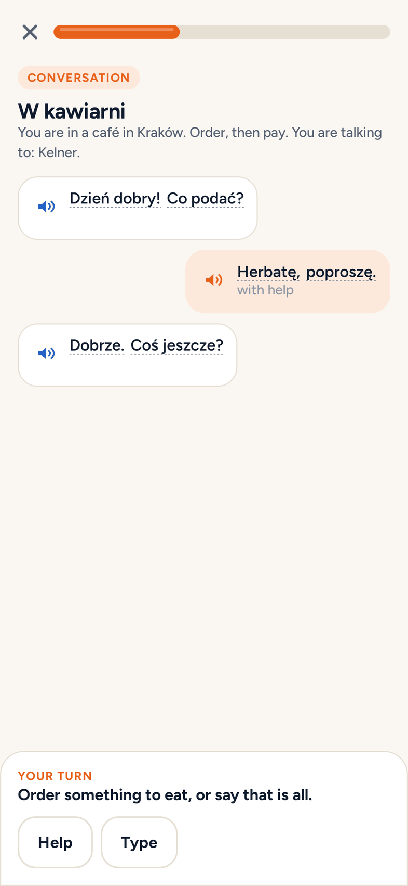
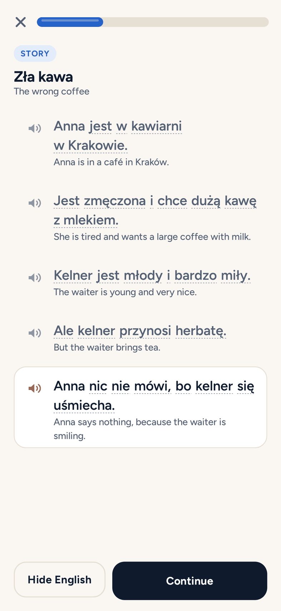
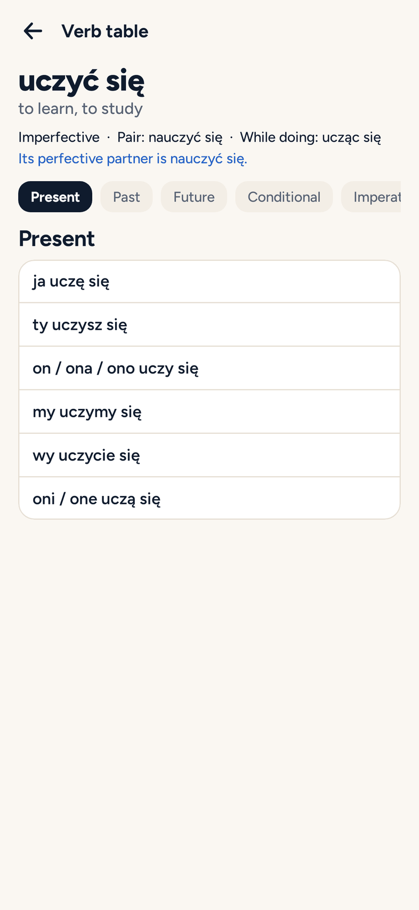
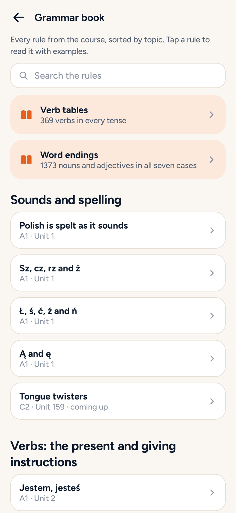
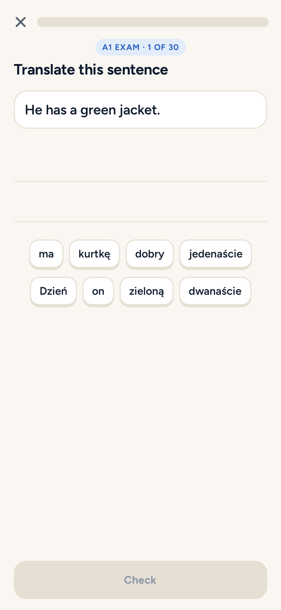
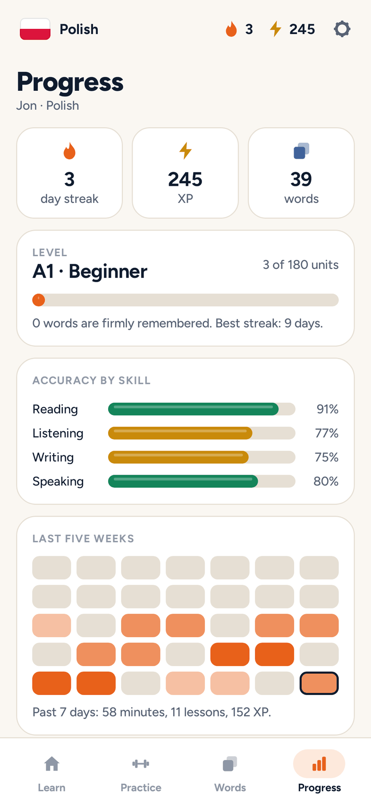
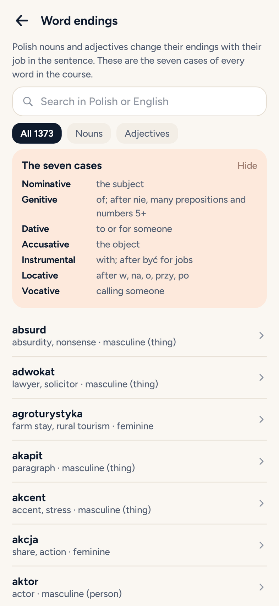
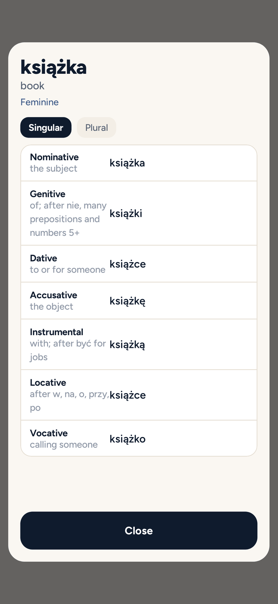
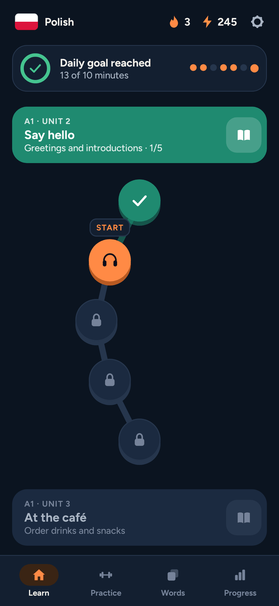
How it works
A little every day beats a lot now and then. PolyFox Polish is built around a few minutes a day.
Set your goal
Choose a daily goal. If you already know some Polish, the level check finds your starting unit.
Do a lesson
About four minutes: a few new words with pictures and sound, then sentences to build, hear, type and say.
Let it come back
What you learned returns in later lessons and in practice, more often when you find it hard and less when you know it.
Everything is in, and all of it is free
Nothing below is held back for a paid tier, because there is no paid tier.
The course
- A1 to C2
- 180 units and 900 lessons: 2,160 words, about 2,880 sentences and 378 grammar notes, all with spoken audio.
- The whole framework
- All six levels of the European framework, from your first Cześć to the precision of C2.
- Start where you are
- A level check places you on the path if you already know some Polish.
- Cases, one at a time
- Polish nouns change their endings. The cases come in one by one, and a Word endings book shows all 1,373 nouns and adjectives of the course in every case. Verbs are taught in aspect pairs.
Lessons
- Fifteen kinds of exercise
- Pictures, matching pairs, word tiles, typing, listening, fill the gap, choose the form, spot the error, dialogues, reading and speaking.
- Every correct answer counts
- Jestem or Ja jestem, Kawę poproszę or Poproszę kawę, numbers as digits, a man’s or a woman’s form: over 420 other correct wordings are accepted, not just one.
- Mistakes explained
- A wrong answer shows which words were wrong and why: the wrong ending and the case it should be, the genitive after nie, a missing nie, and the Polish letters.
- Tap any word
- Every sentence can be tapped word by word for the meaning it has in that sentence, and verbs open their full table.
Speaking and listening
- Speaking checked on your phone
- Say the sentence and a speech model inside the app shows which words were understood. Nothing is sent anywhere.
- Conversations
- Twelve real-life role-plays, from the café to a job interview. Say or type your part, and the other person answers.
- Dictation
- Hear whole sentences and write them down.
- Slow playback
- Every sentence can be played at normal speed or slowly.
Reading and reference
- Forty-two stories
- Short stories set in Poland, from unit 8 to C2, six of them for beginners, read aloud one line at a time, with three questions at the end.
- Verb tables
- 369 verbs in the present, past (a man’s and a woman’s forms), future, conditional and imperative, each marked imperfective or perfective with its partner.
- A grammar book
- All 378 notes from the course, sorted by topic and searchable, from how Polish is spelt to the cases, aspect and verbs of motion.
- An exam for each level
- Thirty questions drawn from the whole level, with no hints. Score 70% to open the next level.
Keeping going
- Smart review
- Reviews are timed by FSRS, the method behind Anki, so each word comes back just before you would forget it.
- A daily goal you choose
- Five to twenty minutes, a streak, and one optional reminder at a time you set.
- No lives to lose
- Mistakes simply come back until you have them right. A five-lives challenge mode is there if you want it.
- Up to five people
- Each person on the phone has their own progress, streak and settings.
For everyone
- Screen readers
- Buttons, switches and answers are labelled for TalkBack, and results are read out.
- Large text
- Screens adapt to the text size set on your phone.
- Light and dark
- Two themes, and a reduce-motion switch.
- A backup you hold
- Save everyone's progress to a file and restore it on another phone.
Your learning is your business
No internet at all
PolyFox Polish has no permission to go online. It cannot send your progress, your voice or anything else anywhere.
Nothing to sign up for
No account, no adverts and no tracking, in the app or on this site.
The microphone is yours
It is used only when you tap record. Your words are recognised by a speech model inside the app, and the recording never leaves the phone.
Installing and updating
PolyFox Polish is not on Google Play, so your phone asks a couple of extra questions the first time.
Download the app file
Tap Download on your phone. The file is called PolyFoxPolish.apk and is about 334 MB, so wifi is best. If Chrome says the file might be harmful, choose Download anyway.
Allow the install
Open the file. The first time, Android asks you to allow installs from your browser. Allow it, go back, and tap Install.
Open PolyFox Polish
Type a name, choose a daily goal, and start the first lesson.
To update, download the newest version and install it over the old one. Your progress, streak and settings are kept.
Questions
Is PolyFox Polish really free?
Yes. There is no paid version, no subscription, no trial and no adverts, and nothing in the app is locked behind payment.
Is it on Google Play?
No. PolyFox Polish is a personal project and is downloaded from this site as an Android app file. It needs Android 8 or later.
Does it need the internet?
No. The app does not ask Android for internet access at all, so it works anywhere and cannot go online. Check for updates and More apps only open a page in your browser.
How does it check my speaking without the internet?
The app carries its own speech model (Whisper Small, running through whisper.cpp). It turns your recording into words on the phone and compares them with the sentence. It knows Polish sounds (rz and ż, ch and h, ó and u) and is lenient about words that sound alike but strict about meaning, so a wrong number or a missing negative does not pass. You can always mark yourself instead.
Why is the download so large?
Every word and sentence has its own recording, over 7,400 clips, read by a man’s and a woman’s voice, and the speech model is about 264 MB. Nothing is downloaded later.
Is there a French version?
Yes. Each language has its own app, so every course can be made as good as it can be. PolyFox French is the sister app, and they can all sit side by side on one phone.
Which Polish does it teach?
Standard Polish as spoken in Poland. Ty comes first and Pan and Pani follow early, for shops, offices and strangers. Lines about yourself, such as Jestem zmęczony or zmęczona, are taught in your own form, and both are always accepted.
Do I need a Polish keyboard?
No. A row of Polish letter keys (ą ć ę ł ń ó ś ź ż) sits above the answer box. At A1 and A2 a missing Polish letter is pointed out and still passes; from B1 it counts.
How far does the course go?
All the way: A1, A2, B1, B2, C1 and C2, from hello to official Polish, proverbs and wordplay, Kochanowski, Miłosz and Szymborska, and everyday spoken Polish.
Are the voices real people?
They are synthetic voices, made in advance and stored in the app. They are credited on the licences page.
Who wrote the course?
The course is written for PolyFox and has not yet been reviewed by native speakers. If something looks wrong, tap the flag after a question, or "My answer is right" after an answer, and share the list from Settings.
How do I update?
Download the newest version from this site and install it over the one you have. Your progress is kept. The app cannot check for updates itself because it cannot go online.